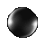

|
Bubbles float up from mouse giving the effect that the mouse is under water. The bubbles even expand in Internet Explorer.  |
| JavaScript Source Code 3000: Page Details: Mouse Bubbles
Simply click inside the window below, use your cursor to highlight the script, and copy (type Control-c or Apple-c) the script into a new file in your text editor (such as Note Pad or Simple Text) and save (Control-s or Command-s). The script is yours!!!
|